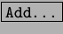

Cuando se selecciona el Gestor de Temas en el Centro de Control de KDE, aparece una pantalla como la que se puede ver en la figura 3.9; simplemente se debe seleccionar el Tema de Escritorio en la lista de la izquierda y la visualización previa de la derecha se irá actualizando para mostrar al usuario una imágen de ejemplo del Tema seleccionado. Si se necesita agregar algún Tema que se haya conseguido por Internet por ejemplo, lo que se debe hacer es oprimir  y seleccionar el archivo del Tema nuevo (éstos archivos son del estilo nombre-del-tema.tar.gz), y automáticamente se agregará a la lista para poder ser seleccionado.
Si por alguna razón se quiere volver al Tema original del KDE, simplemente hay que seleccionar el Tema ``Default'' y la apariencia del escritorio vuelve a ser como en el principio.